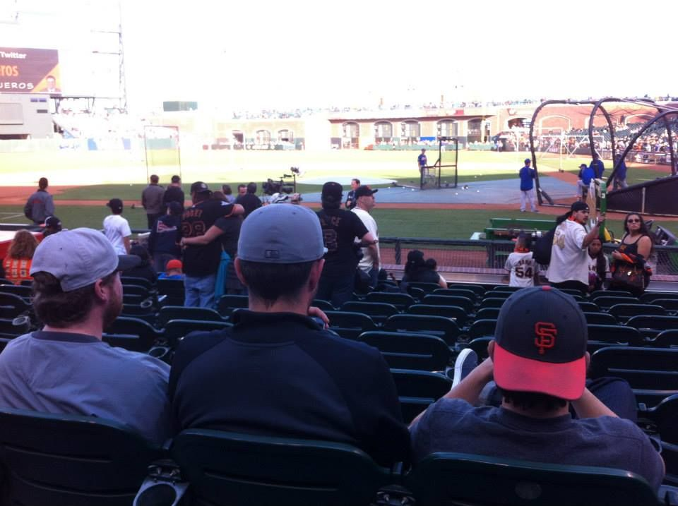

Welcome to the Golden State Fantasy Baseball homepage!
10 team, Head-to-Head points league

League History 🏆
2019 - Appian Assault, Forest Novak
2018 - SF Crusaders, Tom Oneto
2017 - Bixby Kings, Skyler Novak
2016 - Chico PEDs, Alex Ging
2015 - Bay Area BALLerz, Cameron Ball
2014 - Fresno Foul-Ballers, Forest Novak
News & Notes:
Since 2014